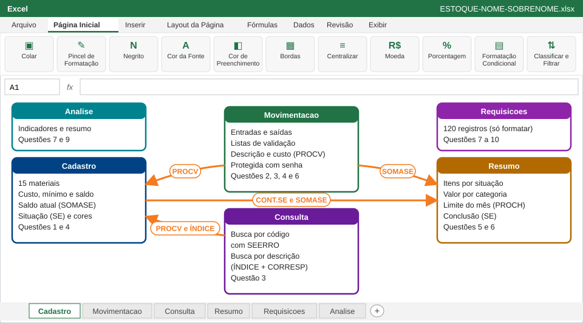

Planilha de controle de estoque do almoxarifado: formatação, validação de dados, PROCV, SE, SOMASE, CONT.SE, PROCH, filtros e proteção
A Metalúrgica Vale do Itajaí (empresa fictícia) controla o almoxarifado em um caderno. No mês passado faltaram máscaras e discos de corte e ninguém percebeu a tempo.
Você entrou como aprendiz no almoxarifado e sua missão é criar a planilha de controle de estoque: cadastrar os materiais, lançar as entradas e saídas de setembro, calcular o saldo de cada item, avisar com cores o que está abaixo do mínimo e montar um resumo para o gerente.
No final, a planilha terá quatro abas, ligadas por fórmulas:

| Momento | O que fazer | Tempo | Pontos |
|---|---|---|---|
| Abertura | Ler esta capa e abrir o Excel | 15 min | — |
| Questão 1 | Cadastro e formatação profissional | 25 min | 1,5 |
| Questão 2 | Movimentação com validação de dados | 30 min | 1,5 |
| Questão 3 | PROCV, SEERRO e ÍNDICE + CORRESP | 30 min | 2,0 |
| Intervalo | — | 15 min | — |
| Questão 4 | Saldo, SE aninhado e formatação condicional | 35 min | 2,0 |
| Questão 5 | Resumo com CONT.SE, SOMASE e PROCH | 25 min | 1,5 |
| Questão 6 | Filtro, proteção e entrega | 20 min | 1,5 |
| Fechamento | Revisar e entregar o arquivo | 10 min | — |
| Total | 3h25 | 10,0 |
Valor na nota final: 10 pontos. O desempenho esperado é de 7,0 ou mais (70%, a mesma média da tabela de notas).
Colunas da planilha: A, B, C, D, E, F, G. Ao copiar, cole na célula A1: colunas de fórmula ficam em branco.
| Código | Descrição | Categoria | Unidade | Custo Unitário | Estoque Mínimo | Saldo Inicial |
|---|---|---|---|---|---|---|
| MAT-001 | Luva de vaqueta | EPI | par | 18,90 | 40 | 55 |
| MAT-002 | Óculos de proteção | EPI | un | 12,50 | 20 | 18 |
| MAT-003 | Protetor auricular plug | EPI | par | 1,80 | 100 | 250 |
| MAT-004 | Máscara PFF2 | EPI | un | 3,20 | 80 | 60 |
| MAT-005 | Parafuso sextavado M8 | Fixação | un | 0,45 | 500 | 1200 |
| MAT-006 | Porca M8 | Fixação | un | 0,15 | 500 | 480 |
| MAT-007 | Arruela lisa 8 mm | Fixação | un | 0,08 | 500 | 900 |
| MAT-008 | Rebite de alumínio 4 mm | Fixação | un | 0,12 | 300 | 350 |
| MAT-009 | Fita isolante 19 mm | Elétrico | rolo | 6,90 | 15 | 12 |
| MAT-010 | Cabo flexível 2,5 mm² | Elétrico | m | 3,40 | 100 | 180 |
| MAT-011 | Disjuntor 20 A | Elétrico | un | 24,90 | 10 | 14 |
| MAT-012 | Disco de corte 7" | Ferramentas | un | 9,80 | 30 | 25 |
| MAT-013 | Broca aço rápido 8 mm | Ferramentas | un | 14,50 | 12 | 20 |
| MAT-014 | Lixa grão 120 | Ferramentas | folha | 1,90 | 50 | 90 |
| MAT-015 | Trena 5 m | Ferramentas | un | 22,00 | 5 | 7 |
Colunas da planilha: A, B, D, E. Ao copiar, cole na célula A1: colunas de fórmula ficam em branco.
| Data | Código | Tipo | Quantidade |
|---|---|---|---|
| 01/09/2026 | MAT-001 | Saída | 20 |
| 02/09/2026 | MAT-005 | Saída | 400 |
| 03/09/2026 | MAT-002 | Entrada | 10 |
| 04/09/2026 | MAT-009 | Saída | 5 |
| 08/09/2026 | MAT-004 | Saída | 30 |
| 09/09/2026 | MAT-012 | Saída | 10 |
| 10/09/2026 | MAT-010 | Entrada | 50 |
| 11/09/2026 | MAT-006 | Saída | 150 |
| 14/09/2026 | MAT-003 | Saída | 60 |
| 15/09/2026 | MAT-013 | Saída | 4 |
| 16/09/2026 | MAT-001 | Entrada | 30 |
| 17/09/2026 | MAT-011 | Saída | 6 |